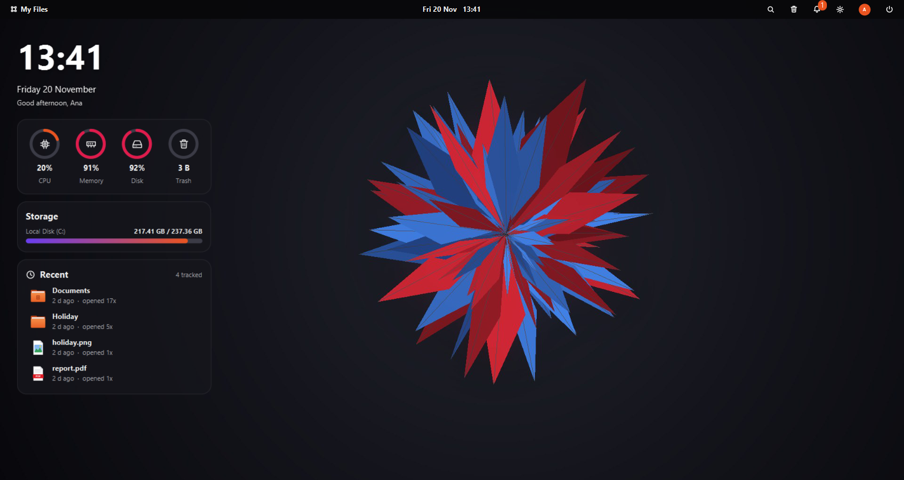
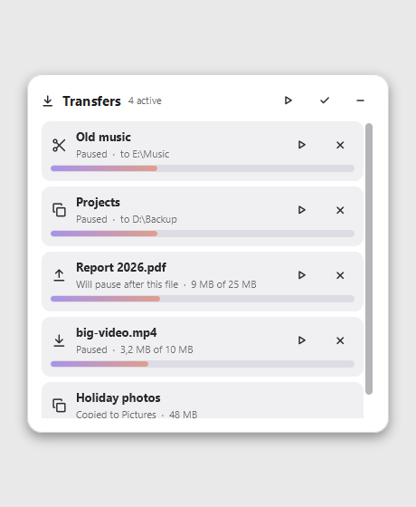

The desktop
FileExp opens a full-screen desktop dedicated to files. Everything — menus, dialogs, previews — is drawn inside this one window, with the same theme, so nothing opens on top in a different style.

Top bar#
| Element | What it does |
|---|---|
| My Files | Opens the file browser (also Ctrl+Space). |
| Clock and date | Click to open a calendar. |
| Search | Opens My Files with the cursor in the search box. |
| Trash | Opens the Trash. |
| Bell | Notifications, with a counter of the new ones. |
| Gear | Settings (also Ctrl+,). |
| Avatar | Your account, favourites, lock and quit. |
| Power | Lock (Ctrl+Alt+L), full screen (F11) and quit. |
Widgets#
On the left of the desktop:
- Clock with the date and a greeting;
- rings for CPU, memory, disk and Trash, with real values;
- storage of each drive with a usage bar;
- recent files and folders.
The style of the widgets — Glass, Solid, Minimal, Outline or Accent colour — is chosen in Settings › Desktop, with a preview.
Notifications#
Operations that take time or that you may want to undo end with a banner in the top-right corner. Many banners have an Undo button, for example after a delete, a rename or a move made by an automation; after a transfer, Open or Show is offered in the transfers panel. Older notifications stay in the list under the bell.
Transfers panel#
Copies, downloads, uploads, backups and files received from nearby computers go through the transfers panel in the bottom-right corner. Each transfer shows the progress in bytes, the speed and the time left, and can be cancelled. The panel can be minimised; when a transfer ends you get Open or Show and a notification.
Pause and resume (since 3.10). Each unfinished transfer has a Pause button next to Cancel; it becomes Resume. A paused transfer keeps what it has done (a large copy goes on from the same byte), and a paused transfer that had not started keeps its place in the queue. Some transfers stop only at a safe point: an upload says "Will pause after this file". With more than one transfer, the button at the top pauses or resumes them all.

Lock screen#
Ctrl+Alt+L (or the power menu) shows the lock screen: a blurred wallpaper, the clock and your avatar. Click, or press Enter or Space, to come back.
Full screen and quitting#
F11 switches full screen on and off. To quit, use the power menu › Quit; FileExp asks for confirmation and closes the vault if it is open.